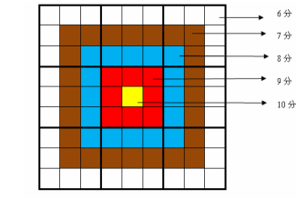
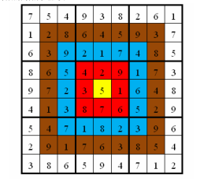

原始题面
1000 ms / 125.00 MB
题目描述
小城和小华都是热爱数学的好学生，最近，他们不约而同地迷上了数独游戏，好胜的他们想用数独来一比高低. 但普通的数独对他们来说都过于简单了，于是他们向 Z 博士请教，Z 博士拿出了他最近发明的“靶形数独”，作为这两个孩子比试的题目
靶形数独的方格同普通数独一样，在 格宽且 格高的大九宫格中有 个 格宽且 格高的小九宫格（用粗黑色线隔开的）. 在这个大九宫格中，有一些数字是已知的，根据这些数字，利用逻辑推理，在其他的空格上填入 到 的数字. 每个数字在每个小九宫格内不能重复出现，每个数字在每行、每列也不能重复出现. 但靶形数独有一点和普通数独不同，即每一个方格都有一个分值，而且如同一个靶子一样，离中心越近则分值越高. （如图）

上图具体的分值分布是：最里面一格（黄色区域）为 分，黄色区域外面的一圈（红色区域）每个格子为 分，再外面一圈（蓝色区域）每个格子为 分，蓝色区域外面一圈（棕色区域）每个格子为 分，最外面一圈（白色区域）每个格子为 分，如上图所示. 比赛的要求是：每个人必须完成一个给定的数独（每个给定数独可能有不同的填法），而且要争取更高的总分数. 而这个总分数即每个方格上的分值和完成这个数独时填在相应格上的数字的乘积的总和
总分数即每个方格上的分值和完成这个数独时填在相应格上的数字的乘积的总和. 如图，在以下的这个已经填完数字的靶形数独游戏中，总分数为 . 游戏规定，将以总分数的高低决出胜负

由于求胜心切，小城找到了善于编程的你，让你帮他求出，对于给定的靶形数独，能够得到的最高分数
输入输出格式
输入格式
一共 行. 每行 个整数（每个数都在 的范围内），表示一个尚未填满的数独方格，未填的空格用“”表示. 每两个数字之间用一个空格隔开
输出格式
输出共 行. 输出可以得到的靶形数独的最高分数. 如果这个数独无解，则输出整数
输入输出样例
输入样例 #1
7 0 0 9 0 0 0 0 1
1 0 0 0 0 5 9 0 0
0 0 0 2 0 0 0 8 0
0 0 5 0 2 0 0 0 3
0 0 0 0 0 0 6 4 8
4 1 3 0 0 0 0 0 0
0 0 7 0 0 2 0 9 0
2 0 1 0 6 0 8 0 4
0 8 0 5 0 4 0 1 2
输出样例 #1
2829
输入样例 #2
0 0 0 7 0 2 4 5 3
9 0 0 0 0 8 0 0 0
7 4 0 0 0 5 0 1 0
1 9 5 0 8 0 0 0 0
0 7 0 0 0 0 0 2 5
0 3 0 5 7 9 1 0 8
0 0 0 6 0 1 0 0 0
0 6 0 9 0 0 0 0 1
0 0 0 0 0 0 0 0 6
输出样例 #2
2852
说明
数据规模与约定
- 对于 的数据，数独中非 数的个数不少于
- 对于 的数据，数独中非 数的个数不少于
- 对于 的数据，数独中非 数的个数不少于
解题思路
复杂度
代码参考
Show code
1 |